Efficient and Equitable Taxation
EC313 - Public Economics: Taxation
Justin Smith
Wilfrid Laurier University
Fall 2025

Goals of This Section
Goals of This Section
Lay out model for optimal taxation
Derive the Ramsey Rule for optimal commodity taxation
Discuss optimal user fees
Discuss optimal income taxation
Discuss political economy and time inconsistency
Discuss other criteria for tax design
Optimal Taxation
Introduction
As we have discussed, government raise taxes mainly to raise revenue
But taxes involve costs
- The direct cost of the revenue raised
- Additional costs from distortions in behaviour (excess burden)
Given that revenue needs to be raised, how should taxes be designed to minimize costs?
Optimal taxation addresses this question
Model
Question of optimal taxation is answered with a model
A representative citizen consumes two goods, \(X\) and \(Y\)
- Prices of these goods are \(P_{X}\) and \(P_{Y}\)
Person can also work and earn wage \(w\)
- Person has \(T\) hours available for work (\(h\)) or leisure (\(L\))
- These are the only two uses of time, so \(T = h + L\)
Their budget constraint in this context is
\[ w(T - L) = P_{X}X + P_{Y}Y\]
- Constraint says that income is split between spending on goods \(X\) and \(Y\)
Model
- If you rearrange the budget constraint, you can write it as
\[wT = P_{X}X + P_{Y}Y + wL\]
Shows that “full income” is split between spending on goods \(X\) and \(Y\) and spending on leisure
- Full income is \(wT\) because if all time was worked, income would be \(wT\)
- Price of leisure is \(w\) because each hour of leisure foregoes \(w\) in earnings
Suppose we tax goods \(X\), \(Y\), and \(L\) at rate \(t\)
Then the budget constraint becomes
\[ wT = (1 + t)P_{X}X + (1 + t)P_{Y}Y + (1 + t)wL\]
Model
- Rearranging gives
\[wT = (1+t)(P_{X}X + P_{Y}Y + wL)\]
\[ \frac{wT}{1 + t} = P_{X}X + P_{Y}Y + wL\]
In this setup, a tax on all goods and leisure is equivalent to a reduction in full income by a factor of \(\frac{1}{1 + t}\)
- We saw this in one of the practice questions
Model
If we could tax all goods and leisure at the same rate, we would not distort behaviour
- People would still choose the same combination of goods and leisure
Why?
- Because relative prices are unchanged
- The commodity taxes are equivalent to a lump-sum tax that reduces income
But in practice, we cannot tax all goods and leisure at the same rate
- We cannot tax leisure directly
- Can only tax \(X\) and \(Y\) in this setup
Taxing some goods (\(X\) and \(Y\)) but not others (\(L\)) distorts relative prices and leads to excess burden
Ramsey Rule
Question then becomes: If we cannot tax all goods at the same rate, how should we tax them?
One option is neutral taxation: taxing \(X\) and \(Y\) at the same rate
- This is simple and easy to administer
- But it still distorts behaviour and creates excess burden
The optimal method is the Ramsey Rule: tax goods so that the percent reduction in quantity demanded is the same for all goods
- Equivalently, tax goods so that the marginal excess burden of the last dollar of revenue raised is the same for all goods
The next few slides establish this result
Ramsey Rule
Consider again two goods, \(X\) and \(Y\), with prices \(P_{X}\) and \(P_{Y}\)
Pretend that goods are neither substitutes nor complements
- Simplifies the analysis because changes in their prices do not affect each other’s demand
- Results still hold for substitutes and complements, but analysis is more complex
Also pretend the supply curve is horizontal
- Consumers face the entire economic incidence of the tax
- Again simplifies the analysis because we do not have to consider supply side effects
Consider a unit tax \(u_{X}\) on good \(X\)
Ramsey Rule
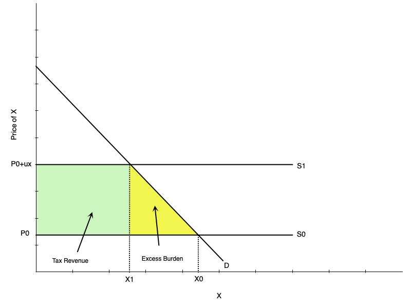
Consumer initially consumes \(X_{0}\) at price \(P_{0}\)
After tax \(u_{X}\) is imposed, price rises to \(P_{0} + u_{X}\)
Consumer reduces consumption to \(X_{1}\)
As we have learned this involves an excess burden
- Equals area of yellow triangle
- Represents the loss in consumer surplus
Ramsey Rule
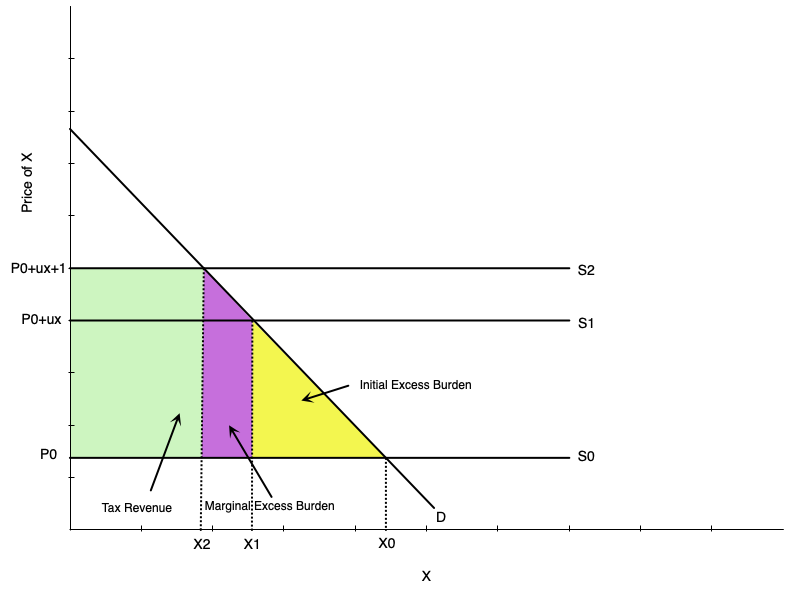
Now imagine raising the tax further from \(u_{X}\) to \(u_{X} + 1\)
The additional excess burden created is the marginal excess burden
- Equals area of purple triangle
Part of that excess burden was tax revenue (purple rectangle)
Other part is additional loss in consumer surplus (purple triangle)
Ramsey Rule
The marginal excess burden of the tax on good \(X\) is the purple area
- Equals area of the purple triangle plus the purple rectangle
To compute that mathematically, set \(\Delta x = X_{1} - X_{2}\)
The total area is then
\[ (\frac{1}{2} \Delta x \times 1) + (\Delta x u_{X}) \]
As noted in the textbook, if we pretend that \(\frac{1}{2} \Delta x\) is very small, we can ignore it
- So marginal excess burden is approximately \(\Delta x u_{X}\)
Ramsey Rule
- Going one step further, note that the slope of the demand curve is \[ \frac{u_{X}}{\Delta X} = \frac{1}{\Delta x} \]
- \(\Delta X = X_{0} - X_{1}\), the initial change in quantity demanded from the initial tax
- Both represent the rise over the run
- Rearranging gives
\[ \Delta x u_{X} = \Delta X\]
The marginal excess burden of the tax on good \(X\) is approximately \(\Delta X\)
- The change in quantity demanded from the initial tax
Ramsey Rule
What about the change in revenue?
Initially revenue was larger green rectangle plus purple rectangle
After, it is larger green rectangle plus smaller green rectangle
The marginal tax revenue is therefore the smaller green rectangle minus the purple rectangle
\[ (X_{2} \times 1) - (\Delta x u_{X}) \]
We previously saw that \(\Delta x u_{X} = \Delta X\)
We also know that \(X_{2} = X_{1} - \Delta x\)
Subbing in gives us
\[ X_{1} - \Delta x - \Delta X \]
Ramsey Rule
IF we pretend that \(\Delta x\) is very small, we can ignore it
- So marginal tax revenue is approximately \(X_{1} - \Delta X\)
The marginal excess burden per dollar of additional revenue is
\[ \frac{\Delta X}{X_{1} - \Delta X} \]
- If we repeat this exact exercise for good \(Y\), we find that the marginal excess burden per dollar of additional revenue is
\[ \frac{\Delta Y}{Y_{1} - \Delta Y} \]
Ramsey Rule
- If we set them equal
\[ \frac{\Delta X}{X_{1} - \Delta X} = \frac{\Delta Y}{Y_{1} - \Delta Y} \]
- Which simplifies to the Ramsey Rule
\[ \frac{\Delta X}{X_{1}} = \frac{\Delta Y}{Y_{1}} \]
- If you multiply both sides by \(100\) to express this as a percentage, it says percent change in quantity demanded of \(X\) equals percent change in quantity demanded of \(Y\)
Ramsey Rule with Elasticities
Economists enjoy expressing things in terms of elasticities
The price elasticity of demand is
\[ \eta_{X} = \frac{\Delta X}{\Delta P_{X}} \times \frac{P_{X}}{X} \]
- Rearrange that to get
\[ \frac{\Delta X}{X} = \eta_{X} \times \frac{\Delta P_{X}}{P_{X}} \] - Substitute that into the Ramsey Rule to get
Ramsey Rule with Elasticities
In this case, consider instead an ad valorem tax that makes the price rise to \(P_{X}(1 + t_{X})\)
The numerator of this fraction is then \(\Delta P_{X} = P_{X}(1+t_{X}) - P_{X} = P_{X}t_{X}\)
Substituting into the equation on the previous slide gives
\[\frac{\Delta X}{X} = \eta_{X} \times t_{X} \] - the Ramsay Rule then becomes
\[ \eta_{X} t_{X} = \eta_{Y} t_{Y} \]
- Equivalently
\[ \frac{t_{X}}{t_{Y}} = \frac{\eta_{Y}}{\eta_{X}} \]
Ramsey Rule with Elasticities
The inverse elasticity rule says that the optimal tax rate on a good is inversely proportional to its price elasticity of demand
- If good \(Y\) has a high elasticity relative to good \(X\), then \(t_{X}\) should be higher than \(t_{Y}\)
Why?
- Because a tax on a good with a high elasticity will cause a large reduction in quantity demanded
- This creates a large excess burden
- So to minimize excess burden, tax goods with high elasticities less
Corlett-Hague Rule
Recall that we could not tax leisure directly
- And therefore could not apply an efficient (lump-sum equivalent) tax
- This created the excess burden
Corlett-Hague suggest approximating a leisure tax by taxing goods that are complements (used together with) to leisure
- Examples: tax sporting equipment, household appliances, recreational vehicles, etc.
This indirectly lowers demand for leisure and acts like a tax on leisure
Gets us a bit closer to the most efficient outcome
Equity in Taxation
Ramsey rule implies taxing goods that are inelastic more heavily
Makes sense when those goods are socially undesirable (e.g., cigarettes, alcohol)
But what if those goods are necessities (e.g., food, clothing, housing, medicine)?
Problematic for a few reasons, but one is that it lacks vertical equity
- Vertical equity: people with greater ability to pay should pay more in taxes
You can modify the Ramsey rule to account for vertical equity
- A modified rule may tax necessities less heavily
- Essentially allows for larger excess burden to achieve greater equity
Summary
In the real world we cannot achieve the efficient outcome of a lump-sum tax to raise government revenue
Distortionary taxes change behaviour and create an excess burden
We can design the tax system to minimize the excess burden
The Ramsey rule gives that optimal design
But tax efficiency is not the sole consideration
- Equity is also important
- The optimal rule can change to account for equity considerations
Optimal User Fees
Introduction
Governments often charge user fees for public services
- User fee: a fee charged by the government for the use of a good or service
- Examples: park entrance fees, toll roads, public transit fares, etc.
Like a tax, but not a tax
Determining the optimal user fee is similar to determining the optimal tax
Government Production
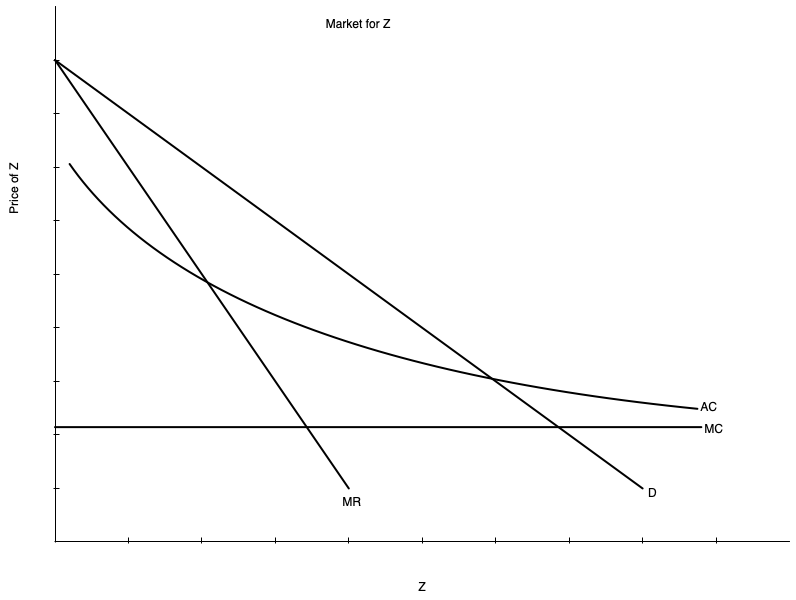
Governments sometimes produce goods/services when there is a natural monopoly
- Natural Monopoly: a market where a single firm can produce the entire output at lower cost than multiple firms
- Happens with continuously decreasing average costs
- Examples: water, electricity, public transit, etc.
Natural monopoly depicted to the left
Marginal cost fixed for ease of analysis
- Could also draw it downward sloping as in the text
Government Production
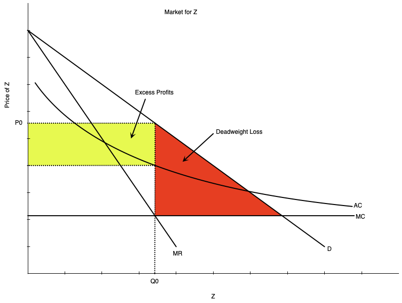
An unregulated monopolist would produce \(Q_{0}\) where MR = MC
Would charge price \(P_{0}\)
The monopoly earns excess profits equal to yellow area
Also associated with deadweight loss (excess burden) equal to red area
The monopolist does not produce the efficient (P=MC) level of Z
Government Production
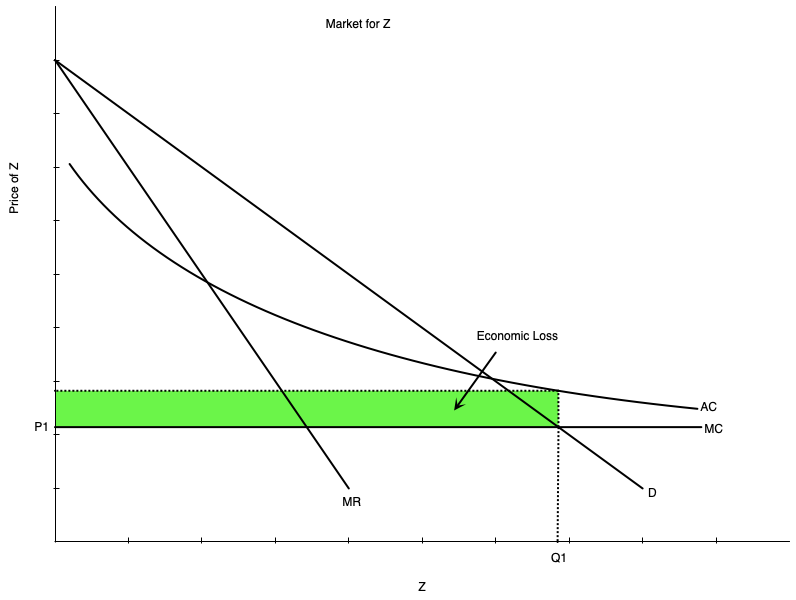
The government could take over and produce the good/service
- Or regulate the private monopolist
There are different options for production
One is to produce the efficient level \(Q_{1}\) where \(P = MC\)
But price \(P_{1}\) is below average cost \(AC\)
The government would incur a loss equal to green area
Government Production
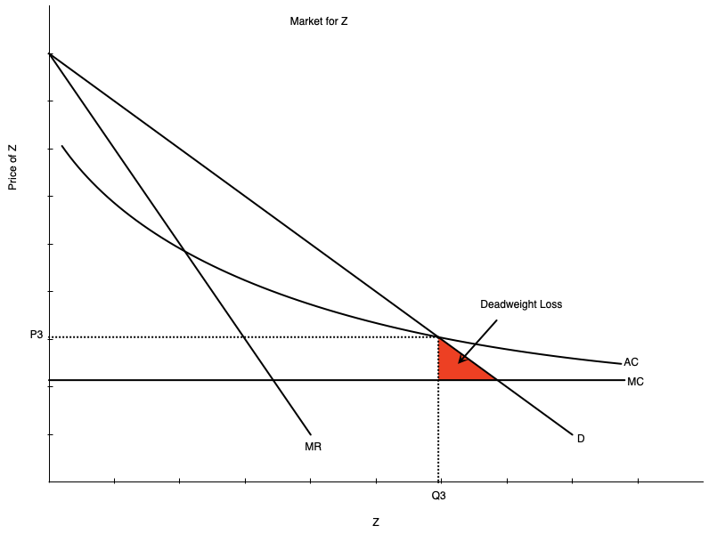
Another option is average cost pricing
Produce \(Q_{2}\) where \(P = AC\)
Government incurs no excess profits or losses
Price \(P_{2}\) is above \(MC\), so there is still some deadweight loss (excess burden) equal to red area
Government Production
A third option is to set P=MC and charge a lump sum tax to cover the loss
- Hard to do in practice because generally cannot levy lump sum taxes
- Consumers not using the good would pay for it
A fourth option is a two-part tariff
- Set P=MC and charge a fixed fee to cover the loss
- Only users of the good pay the fee
- Divide the fee by the number of users to get the fee per user
Government Production
Lastly, use the Ramsey Rule
- If government produces muliple goods/services, set user fees for each
- Optimally set them so that the percent reduction in quantity demanded is the same for all goods/services
- We saw that this involves setting higher fees goods/services with inelastic demand
- The user fee effectively acts like a tax on the good/service
Optimal Income Tax
Introduction
So far we have discussed optimal commodity taxes and user fees
Income taxes are another major source of government revenue
Income taxes are different because they tax a person’s ability to pay
- Ability to pay is determined by income
- Income taxes therefore affect both labour supply and consumption
You can design an income tax optimally
Old School Optimal Tax
A very old approach to optimal income taxation is Edgeworth’s Model
A model based on the following assumptions
- Maximize social welfare: the combination of individual utilities
- In this model, the social welfare is utilitarian: the sum of individual utilities
- Each person’s utility is the same, depends only on income
- Has diminishing marginal utility of income
- Total amount of income in society is fixed
This model predicts that after-tax income is the same for everyone
- Involves taxing rich and giving to poor until equality is reached
This is not a realistic model, but it is a starting point
Newer Approach to Optimal Tax
Major problem with Edgeworth’s model is that it ignores behavioural responses
- People will supply less labour if taxed heavily
We know from previous sections that taxes affect labour supply
Modern models take this into account
- Taxes raise revenue
- But also create excess burden by distorting labour supply
- Optimal tax balances these two effects
These models compute optimal tax in a world where people choose labour and leisure
Newer Approach to Optimal Tax
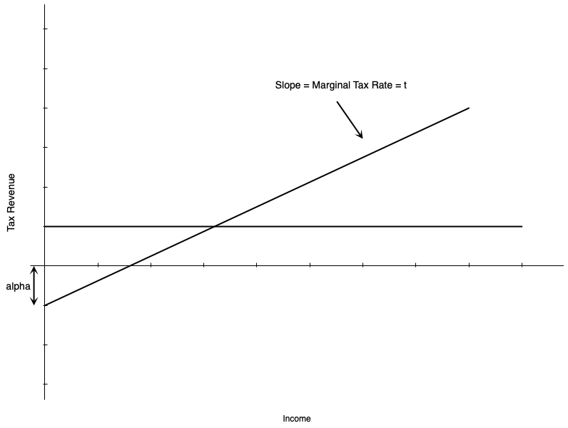
A simplified version of this model is depicted to the left
In this setup revenue is
\[ Revenue = -\alpha + t \times Income \]
The term \(-\alpha\) is a fixed payment to everyone
- If \(\alpha > 0\), it is a subsidy
- If \(\alpha < 0\), it is a lump-sum tax
The term \(t\) is the marginal income tax
Newer Approach to Optimal Tax
A constant marginal tax is a flat tax
- Comes from a linear tax schedule
Studies find that the optimal income tax is non-linear
- Marginal tax rate rises with income
- Implies a progressive tax system
- This exists in many countries, including Canada and the US
However, they also find that the optimal non-linear tax is approximated a flat tax
- So we can still gain insights from the flat tax
Newer Approach to Optimal Tax
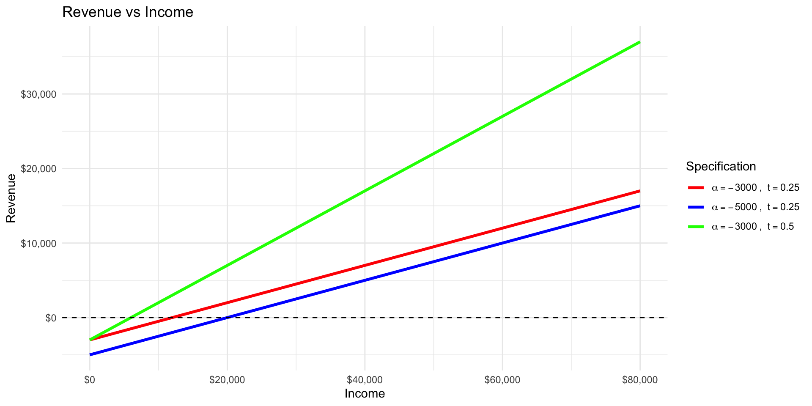
An example with different flat taxes is shown to the left
Graph plots total revenue
There are three curves
- \(alpha = -3000\), \(t = 0.25\)
- \(alpha = -5000\), \(t = 0.25\)
- \(alpha = -3000\), \(t = 0.5\)
\(alpha\) changes the intercept
\(t\) changes the slope
Newer Approach to Optimal Tax
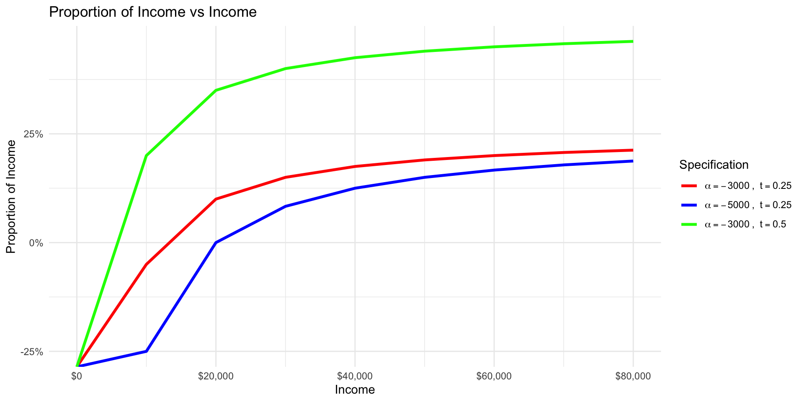
Now plot the proportion of income paid in tax
Here you can see the progressivity of the tax
The tax with the highest marginal tax rate (\(t=0.5\)) and the lowest fixed payment (\(\alpha = -3000\)) is the most progressive
The higher the marginal tax rate, the more progressive the tax
The lower the fixed payment, the more progressive the tax
Newer Approach to Optimal Tax
The specific optimal tax rates depend on the model assumptions
- Labour supply elasticity
- Social welfare function
- Ability to pay
- Income distribution
With the utilitarian social welfare function, optimal is around 50%
- Optimal grant \(\alpha\) is about 60% of average worker income
Using a more egalitarian social welfare function, optimal tax is higher
- Egalitarian social welfare function puts more weight on poorer individuals
- Optimal rate around 80%
Finally, some studies find that if tax rates are allowed to be different, rich should pay lower marginal rate
Politics and Time Inconsistency
Introduction
Optimal tax theory provides purely theoretical guidance on how to design taxes
In practice, tax policy is determined by politics
- Politicians care about getting elected
- Voters care about their own taxes and benefits
So the optimal tax is not a realistic outcome
It is possible that in the real world, implementing the optimal tax is not even desirable
Time Inconsistency Problem
Imagine a government wants to tax society to raise revenue
There are three possible goods that people can consume
- \(X\), \(Y\), and Leisure \(L\)
Labour has a fixed supply so income is also fixed
The government is allowed to tax \(X\), but not \(Y\)
A tax economist suggests lowering the tax on \(X\) and taxing \(X\) and \(Y\) at the same rate
- Efficient because relative prices are unchanged, no change in labour
- No excess burden
Time Inconsistency Problem
Citizens are cynical
- They think the government will implement the tax on \(Y\) but not lower it on \(X\)
- View the government as trying to maximize revenue at their expense
- In certain situations they might be right
If they are correct, taxing only \(X\) is more efficient than the alternative of taxing both
This is an example of the time inconsistency problem: optimal tax policy is not credible over time
- The government cannot commit to future policies
To fully implement optimal tax, the government must credibly commit to future policies
- This is difficult in practice
- So optimal tax may not be achievable or even desirable
Other Criteria for Tax Design
Horizontal Equity
Horizontal Equity: people in “equal positions” should be treated equally
- When it comes to taxation, equal positions might mean equal ability to pay, out of income, consumption, or wealth
Horizontal equity is desirable because it is viewed as fair
- People in equal positions should pay the same tax
- If not, people may view the tax system as unfair and try to avoid taxes
Defining horizontal equity in terms of income or wage is problematic
- Two people who earn the same wage but work different hours have different abilities to pay
- Taxing wage instead is a problem because it is based on human capital investments
Horizontal Equity
Could instead define horizontal equity in terms of utility
- Utility definition of horizontal equity: people with the same pre-tax utility should have the same after-tax utility, and taxes should not alter the utility ordering
Several problems with this approach
Utility is unobservable
If taxing only income, it can penalize people who
- Consume goods that are income intensive
- Work in jobs where the pay is purely monetary instead of non-income benefits (e.g. nice work environment, flexible work)
Depends on utility ordering prior to any new taxes being imposed (i.e. biased towards status quo)
Basic idea is that while horizontal equity is desirable, it is hard to define and implement in practice
Administrative Costs
Taxes are costly to administer
- Estimates suggest direct costs of about $1 to collect $100 of tax revenue in Canada
- Average taxpayer pays about $200-$250 in tax preparation costs per year
- Adding up costs over firms, individuals, government, it costs about 2% of GDP to collect taxes in Canada
Tax design has to balance the benefits of a tax against its administrative costs
- A tax that raises a lot of revenue but is very costly to administer may not be desirable
- A tax that is easy to administer but raises little revenue may also not be desirable
Some changes in taxation have lead to smaller costs
- Online filing
- Automatic download of tax forms to online portals
- Potential for future: automatic filing
Compliance
Canada and other countries operate on a self-assessment system
- Taxpayers are responsible for reporting their income and calculating their taxes
- Government audits a small percentage of taxpayers to ensure compliance
Some people engage in tax avoidance
- Legal ways: changing behaviour to minimize taxes
- Illegal ways: tax evasion, not reporting income, fraud
It is not always easy to catch tax evasion
- Government has to balance the costs of enforcement against the benefits
- If enforcement is too costly, it may not be worth it
There is an economic theory that determines “optimal” tax evasion
Compliance
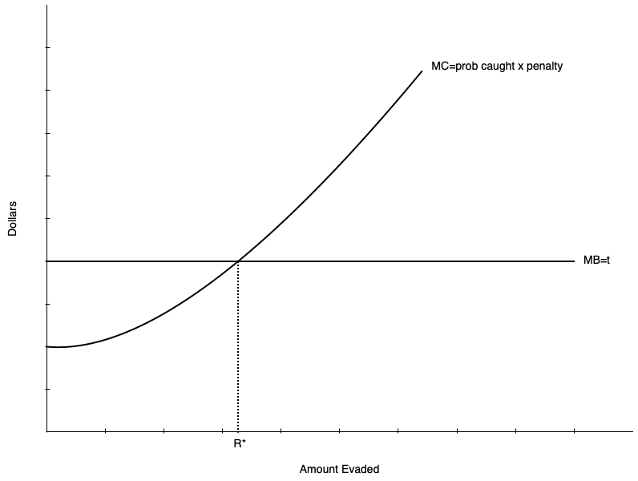
Imagine that costs of evasion rise with the amount evaded
- Penalty rises with amount evaded
- There is some probability that you get caught
- Could be psychic costs to cheating
- Risk aversion might play a role
Benefit is constant
- Gain is \(t\) per $1 evaded
As with many economic decisions, otimal evasion occurs where marginal benefit equals marginal cost
This person would evade \(R^{*}\)
Compliance
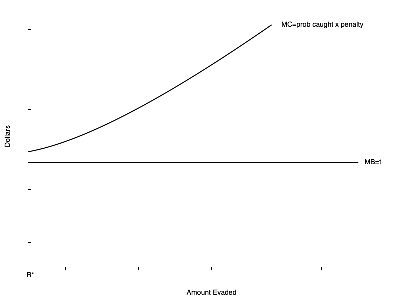
If costs are too high, no evasion occurs
- Probability of getting caught might be high
- Penalty might be high
- Large psychic costs or very risk averse
Compliance
Also the normative question about tax evasion: do we care?
Some economies have large underground or informal economies
- Developing countries often have significant employment in informal economies
While it is incorrect to call them tax evaders, people in informal employment do not pay taxes
It might be desirable to have the underground/informal economy even if they pay no tax
- They are often poor and would not pay much tax
- They often provide goods/services that are beneficial to society
- Trying to eliminate the informal economy might do more harm than good
Summary
Summary
- Taxes create excess burden by distorting behaviour
- The Ramsey Rule gives the optimal way to tax goods to minimize excess burden
- User fees can be optimized in a similar manner
- Optimal income tax is progressive, but the specific rates depend on model assumptions
- Politics and time inconsistency can prevent optimal tax from being implemented
- Other criteria for tax design include horizontal equity, administrative costs, and compliance
References
References
Rosen, Harvey S., and Lindsay M. Tedds, and Trevor Tombe, and Jean-Francois Wen, and Tracy Snoddon. Public Finance in Canada. 6th Canadian edition. McGraw-Hill Ryerson, 2023.
Gruber, Jonathan. Public Finance and Public Policy. 7th edition. Worth Publishers, 2022.